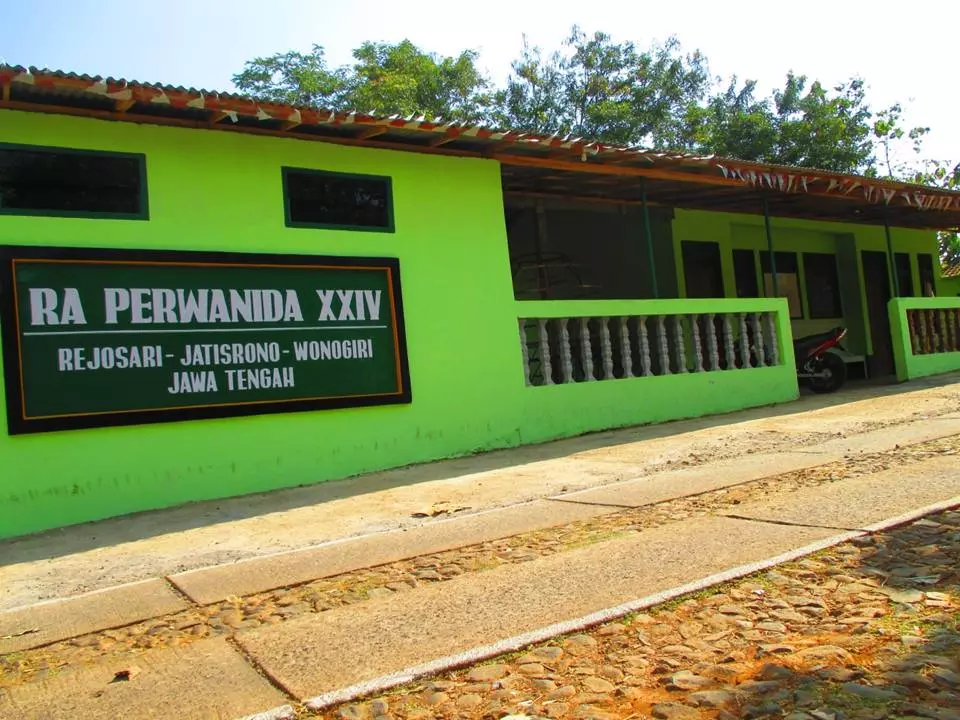
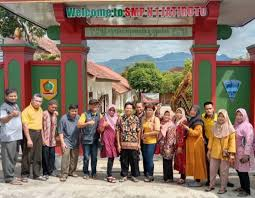
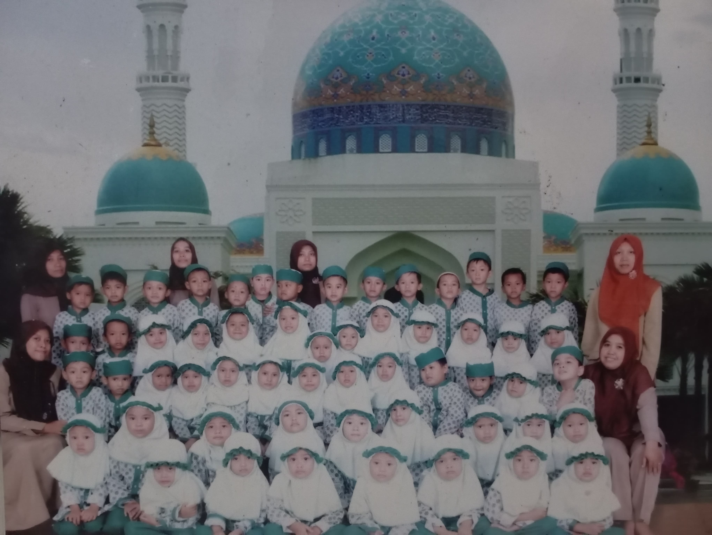

|

|
|

|
|  |

|
|||
RA PERWANIDA (TK)Di RA Perwanida, saya mulai belajar mengenal huruf, angka, dan bersosialisasi dengan teman-teman. Aktivitas yang paling menyenangkan adalah bermain sambil belajar dan hanya melakukan kegiatan sesuai keinginan tanpa memikirkan masalah. |
SDN 2 REJOSARI (SD)Selama di SDN 2 Rejosari, saya aktif dalam kegiatan pramuka dan sempat ikut karawitan selain itu dulu saya juga slalu mengikuti les setelah pulnang sekolah. Saya mendapatkan banyak teman dan pengalaman seru. |
SMPN 1 JATIROTO (SMP)Pada masa SMP, sayajuga aktif dalam kegiatan ekstrakurikuler pramuka, masa smp kelas 1 saya di era covid 19 jadi harus belajar secara online dan masuknya di sesi. |
SMKN 1 JATIROTO (SMK)Di SMKN 1 JATIROTO, saya memilih Perkembanga Perangkat Lunak & Gim, di masa SMK ini justru saya lebih banyak pengalaman seperti, ikut serta dalam upacara HUTRI menjadi bagian dari drunbend SMK, selain itu saat ini saya mengikuti extracuriculer Technoart yang membuuat saya menambah ilmu dan pengalaman baru seperti membuat beberapa project film dan desain. |